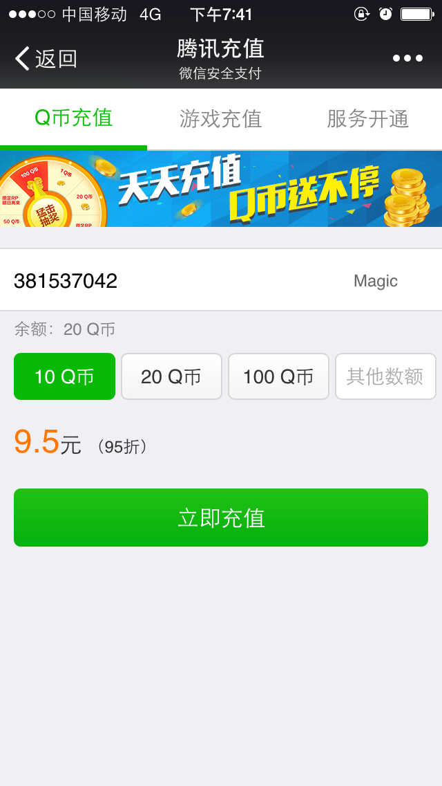
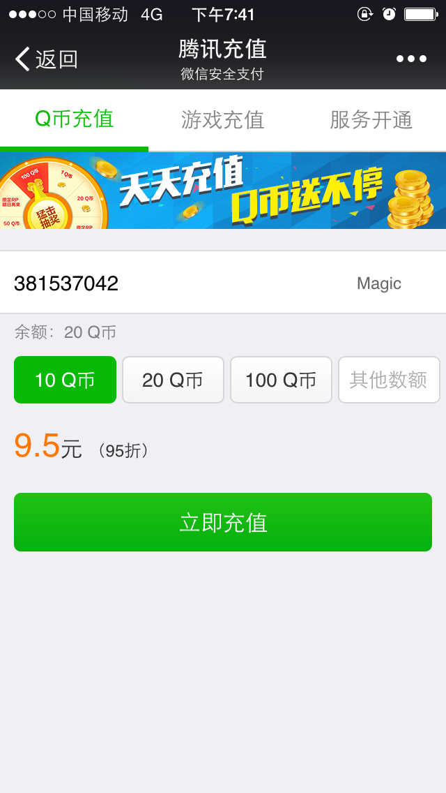

我们可以用来干什么？
-
多媒体聊天：聊天室、在线客服


-
在线游戏：双人打飞机、棋牌类游戏

-
数据实时监控：反观镜全景视图、股票基金

-
多屏互动：活动推广（《斗战诛天》）

- .......


深入浅出H5

| 不规则图形 | 浏览器支持情况 | |
| canvas | 支持 | pc：ie678以外的浏览器都支持 手机：基本都支持 |
|---|---|---|
| div | 只支持矩形 | 所有浏览器均支持 |

目前已经实现以下功能：
最佳体验环境：Android + Firefox(或Chrome)


http://chat.tangchanglin.com/chat.php
WebSocket 出现之前，我们通过 轮询/长连接/Flash 来实现
优点

不足
 
